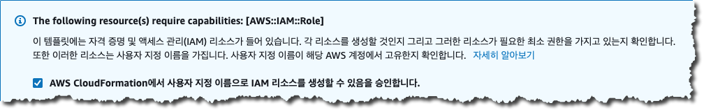

환경 구성 및 설정
이제 본격적으로 앞으로 진행할 실습의 초기 환경을 구성하게 됩니다. 여러분들은 앞으로 실습에 필요한 AWS 리소스를 자동으로 생성해 주는 2개의 CloudFormation템플릿을 실행하게 되며, 나머지 추가작업들은 본 가이드의 지침에 따라 직접 수행하게 될 것입니다.
소요 시간
- 첫번째 CloudFormation 템플릿의 내용을 살펴보고 실행하기 – 5 분
- SNS 구독 확인 - 1 분
- CloudWatch Rule 생성 - 5분
- 탐지 기능 활성화 – 5 분
본 실습의 모든 과정은 오레곤 리전에서 이루어집니다. 원활한 실습 진행을 위해서 반드시 서울 리전이 선택되었는지를 확인하시기 바랍니다.
1. CloudFormation 템플릿 실행
CloudFormation은 템플릿 파일 (json, yml)에 EC2 인스턴스, 네트워크 구성 등의 클라우드 인프라 리소스를 모델링하고 클라우드 환경에서 프로비저닝할 수 있는 서비스입니다.
CloudFormation 을 실행하기 전에 CloudFormation Code 를 확인하고 싶으시면 여기를 클릭하시면 됩니다..
CloudFormation 템플릿을 실행하기 위해 Deploy to AWS 링크를 클릭합니다.
Region Deploy Oregon “Deploy to AWS” 를 클릭하면 브라우져에서 새로운 창이나 새로운 탭이 열리면서 CloudFormation 을 실행할 수 있는 AWS Console 화면으로 자동 접속되게 됩니다.
아래의 “스택 세부 정보 지정” 설정 화면에서 CloudFormation 스택의 이름을 확인하고(수정하셔도 됩니다.) “Email Address” 부분에 SNS 알람 이메일을 수신할 메일 주소를 입력하시기 바랍니다.
다음 단계 진행을 위하여 화면 하단의 “다음” 버튼을 클릭하여 상세 설정 화면으로 이동합니다.E-mail 주소를 입력하지 않고 진행하는 경우 스택 생성 시작 후 에러와 함께 스택 생성이 진행되지 않으므로 반드시 E-mail 주소를 입력하시기 바랍니다.
“스택 생성” 버튼을 클릭하면 아래와 같은 화면이 나타나게 됩니다. Tag 값을 설정하시려면 원하는 Tag 값을 입력하시고 Tag 가 필요없는 경우 “다음” 버튼을 클릭합니다.
다음 화면에서 스택 생성을 위하여 사용된 템플릿의 설정값을 확인한 후 화면 하단에 있는 IAM 리소스 생성 권한 승인 항목을 체크한 후 “스택 생성” 버튼을 클릭합니다. 
정상적으로 진행이 되는 경우 아래와 같이 스택의 상태가 “CREATE_COMPLETE)으로 되어 있는 것을 확인하실 수 있습니다.
2. SNS 구독 확인
- 이전 단계의 CloudFormation 이 실행되면 여러분들이 등록한 Email 주소로 SNS 토픽에 대한 구독 설정을 하게됩니다. 따라서, 이와 관련한 메일이 여러분들의 Email 주소로 발송되게 되는데 해당 SNS 구독을 확인하기 위하여 아래와 같이 SNS 구독 이메일이 수신되었다면 구독 확인(Confirm Subscription) 링크를 클릭해주시기 바랍니다.
- 구독이 정상적으로 완료되면 아래와 같은 페이지로 리다이렉트 되는 것을 확인하실 수 있습니다.

이 실습에 사용된 스택은 AWS 보안 서비스의 탐지 기능들을 테스트하기 위하여 교육용으로 작성된 것으로 실제 서비스 환경에서는 사용하시면 안됩니다.
3. CloudWatch 이벤트 규칙 설정
조금 전 실행한 CloudFormation 템플릿은 경보 발생을 위한 몇 개의 CloudWatch 이벤트 규칙들을 생성하였습니다. 이 단계에서는 템플릿이 자동으로 생성한 CloudWatch 이벤트 규칙에 추가적으로 하나의 이벤트 규칙을 더 생성하여 탐지 제어에 필요한 이벤트 규칙 생성을 마무리짓도록 하겠습니다. 이 규칙을 생성하고 나면 여러분은 탐지된 위협을 바탕으로 AWS Lambda 함수와 연계된 이메일 알람을 받을 수 있게 됩니다.
아래의 순서에 따라 CloudWatch 이벤트 규칙을 생성하실 수 있으며 보다 자세한 GuardDuty 활용에 관련한 사항은 Amazon GuardDuty 문서에서 참고하실 수 있습니다.
- CloudWatch Console 화면에 접속합니다.
- 화면 좌측의 “이벤트” 하단의 “규칙” 을 클릭합니다.
- “규칙 생성” 버튼을 클릭합니다.
- “1단계: 규칙 생성” 화면에서 중앙의 “서비스별 이벤트와 일치시킬 이벤트 패턴을 생성” 메뉴를 클릭한 후 “사용자 지정 이벤트 패턴 생성” 을 선택합니다.
아래의 사용자 지정 이벤트 패턴을 복사한 후 붙여넣기를 합니다.
{ "source": [ "aws.guardduty" ], "detail": { "type": [ "UnauthorizedAccess:EC2/MaliciousIPCaller.Custom" ] } }대상 지정을 위해 “대상 추가” 를 클릭한 후 “Lambda 함수” 가 선택된 상태에서 “threat-detection-wksp-remediation-nacl” 를 선택합니다. 상세 정보 설정을 위하여 “세부 정보 구성” 버튼을 클릭합니다.
“2단계: 규칙 세부 정보 구성” 화면에서 아래와 같이 값을 입력합니다.
이름 : threat-detection-wksp-guardduty-finding-ec2-maliciousip
설명 : GuardDuty Finding: UnauthorizedAccess:EC2/MaliciousIPCaller.Custom여유가 있으시다면 Lambda 화면에 접속하여 CloudFormation 이 생성한 Lambda 함수를 확인한 후 해당 Lambda 함수가 제공하는 기능에 대해 살펴보셔도 좋습니다.
3. 보안 서비스 활성화
1. Amazon GuardDuty 활성화
1.1 GuardDuty 활성화를 위하여 AWS Console 에서 GuardDuty 메뉴로 이동합니다. 아래와 같은 GuardDuty 시작화면에서 “시작하기” 버튼을 클릭합니다. 1.2 다음 화면에서 “GuardDuty 활성화” 버튼을 클릭합니다.
2. AWS Security Hub 활성화
2.1 Security Hub 활성화를 위하여 AWS Console 에서 Security Hub 메뉴로 이동합니다. 아래와 같은 Security Hub 시작화면에서 “Security Hub로 이동” 버튼을 클릭합니다. 2.2 다음 화면에서 “Security Hub 활성화” 버튼을 클릭합니다.
Security Hub 의 경우 활성화 이전에 발생된 탐지 내역에 대해서는 정보를 제공하지 않습니다. 따라서, 실습이 진행되는 중반 이후에 Security Hub 를 활성화하게 되면 GuardDuty 나 Inspector 가 Security Hub 활성화 시점 전에 탐지한 내역에 대해서는 모니터링이 불가능하므로 반드시 이 단계에서 Security Hub 를 활성화한 후 다음 단계를 진행하시기 바랍니다.